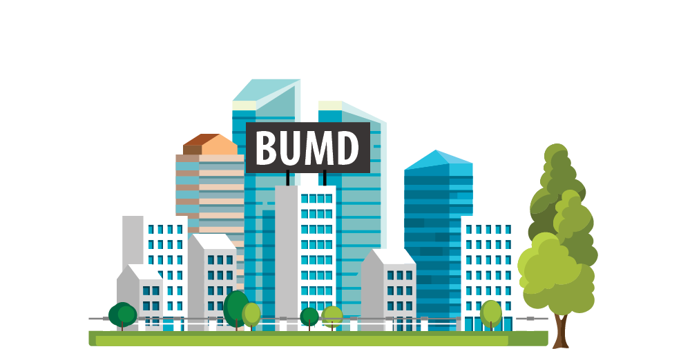
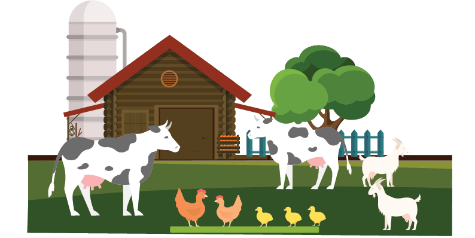
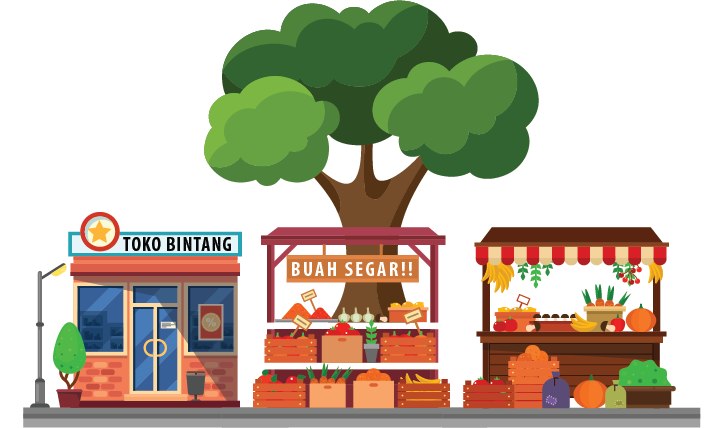
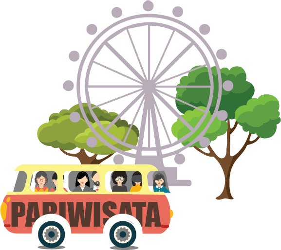
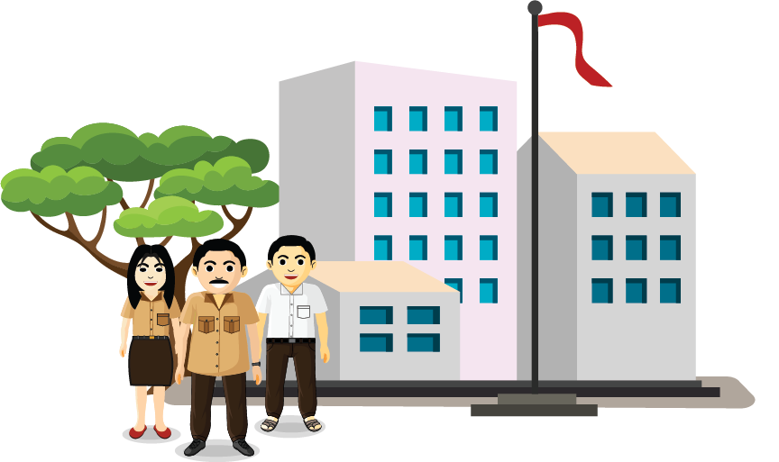
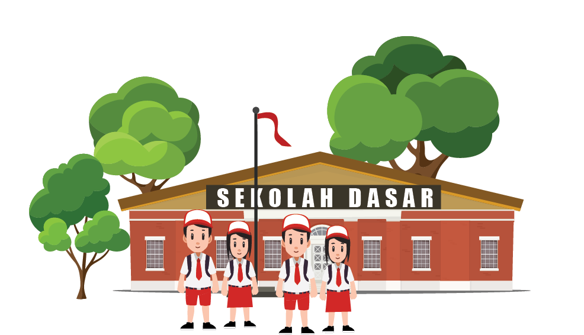
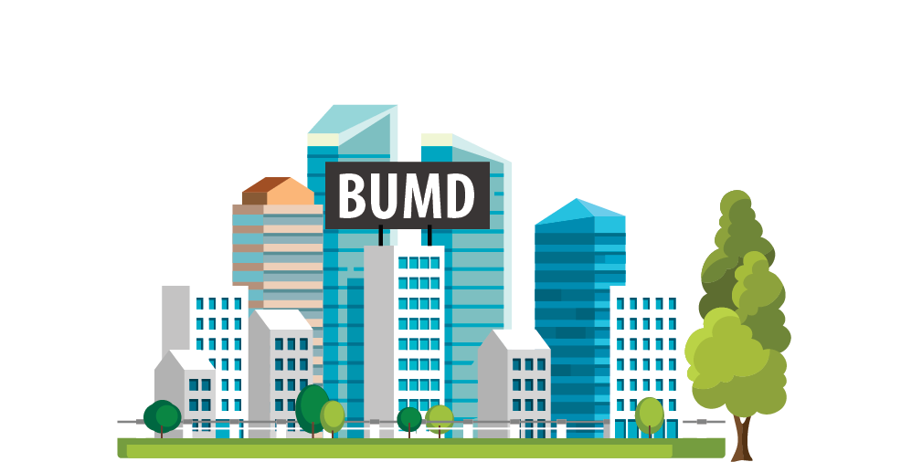
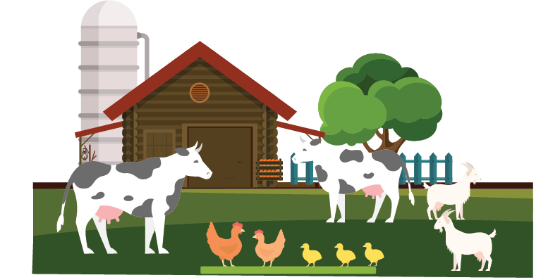
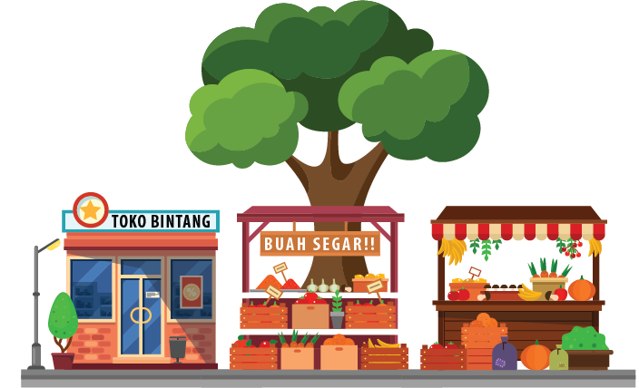
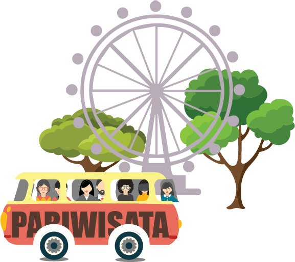
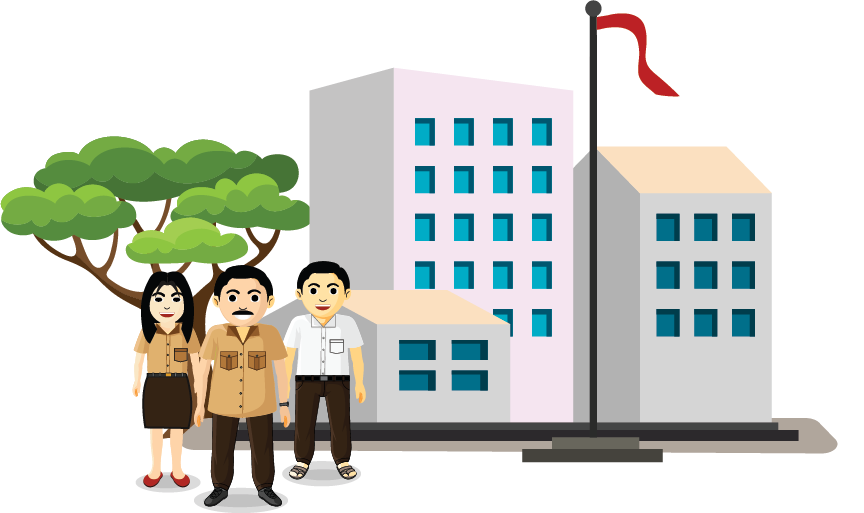
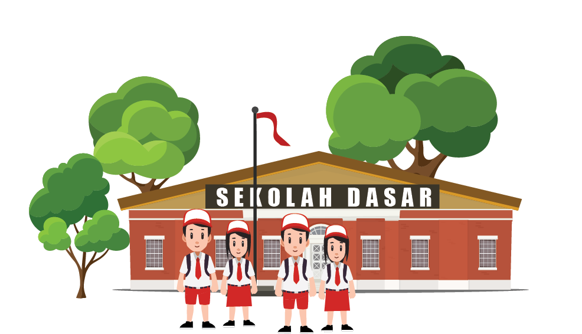


TUAH
INDUSTRI HULU MIGAS
PASCA MASA JAYA

Dua sampai tiga dekade silam, Indonesia terkenal sebagai negara produsen dan eksportir utama
minyak dunia. Ini terjadi lantaran negara kita mampu memproduksi minyak bumi dengan jumlah
besar dan mengekspornya.

 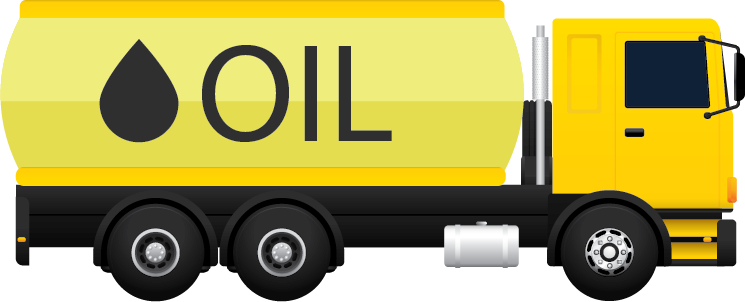
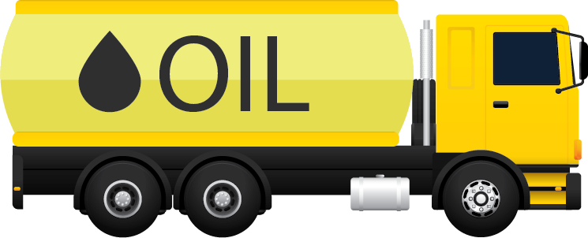


 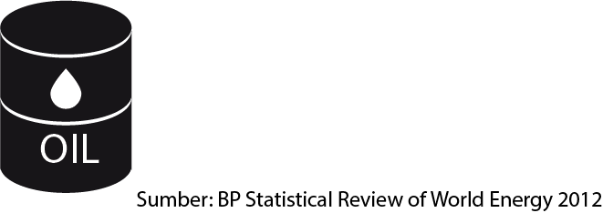
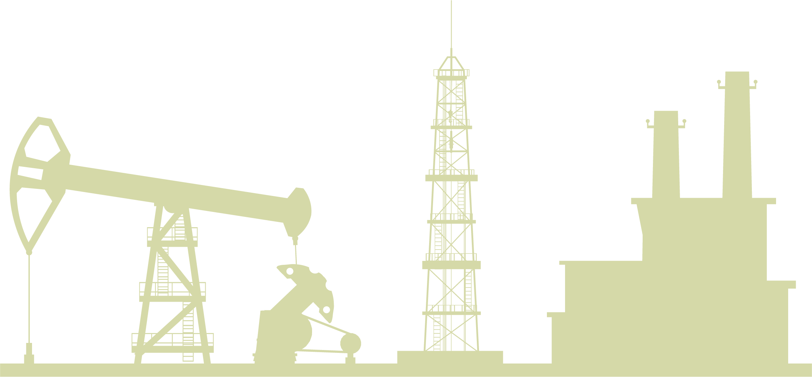
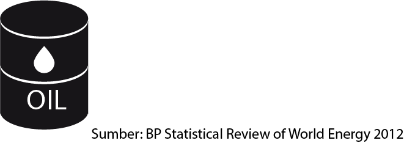
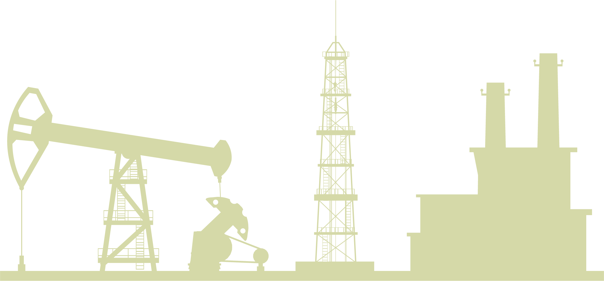
Dengan fakta tersebut, Indonesia pun menjadi salah satu anggota organisasi negara-negara pengekspor minyak (OPEC)
yang punya pengaruh lumayan besar kala itu.
 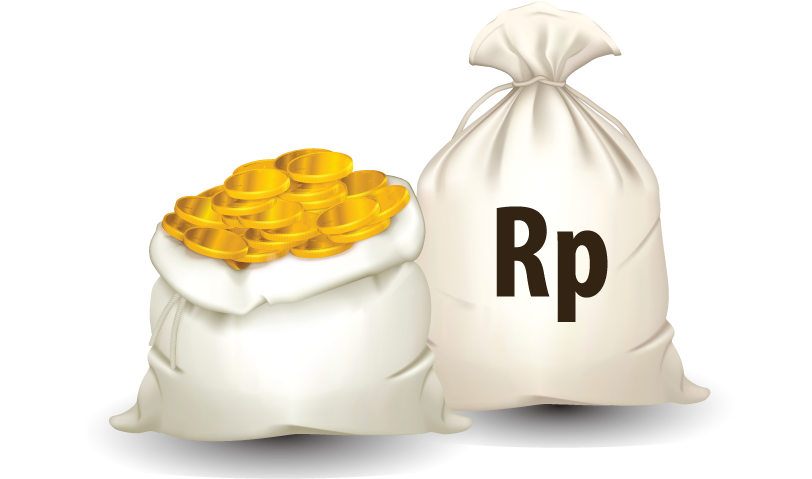
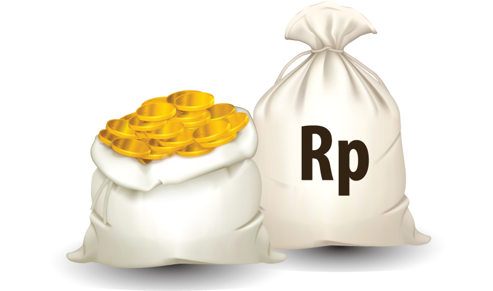
Adapun untuk dalam negeri, industri hulu minyak dan gas (migas) punya peranan penting bagi pembangunan Tanah Air.
Ini karena memberikan sumbangan besar bagi penerimaan negara.
Hasil riset Reforminer Institute menyatakan,
pada medio 1970-1990 sektor migas memberikan sumbangan 62,88 persen terhadap penerimaan negara.

Kini malah keadaan berbanding terbalik.
Indonesia bukan lagi negara surplus migas
bahkan saat ini terancam mengalami krisis migas.